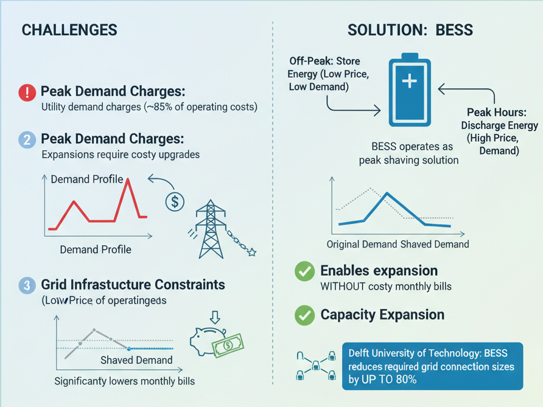
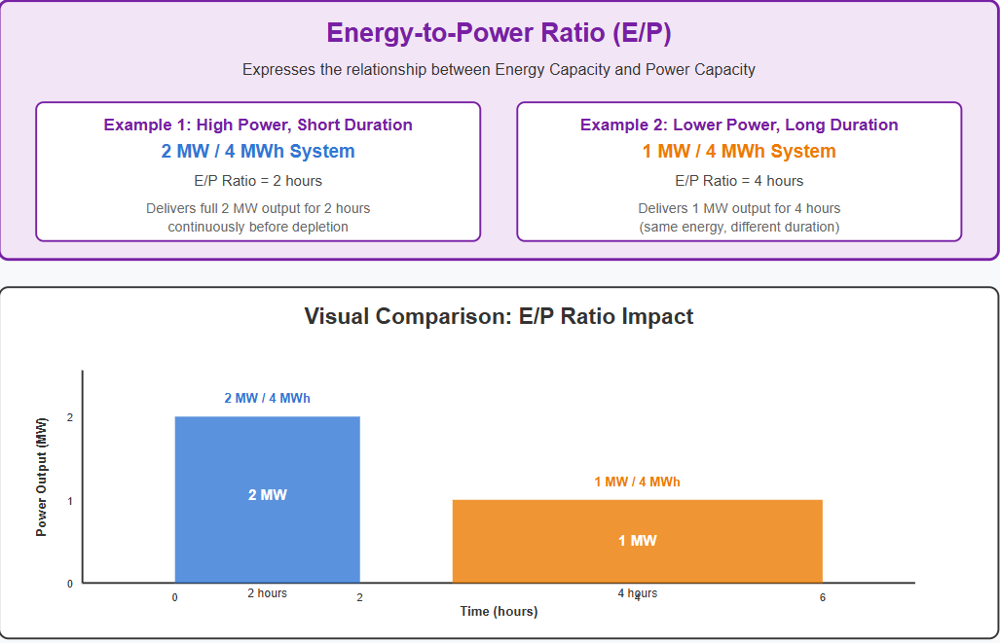
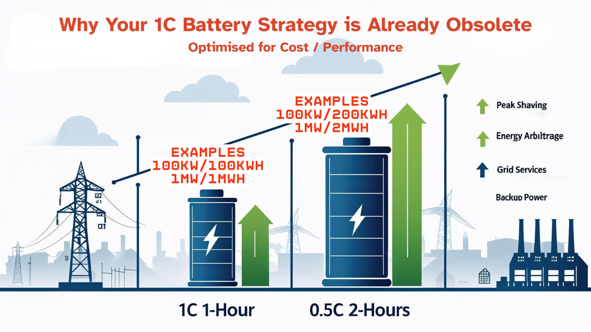
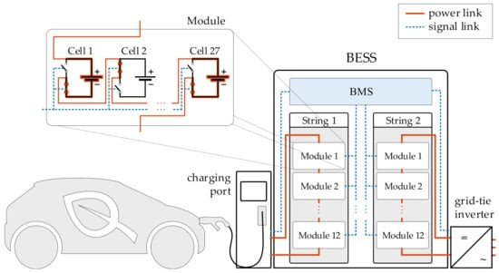
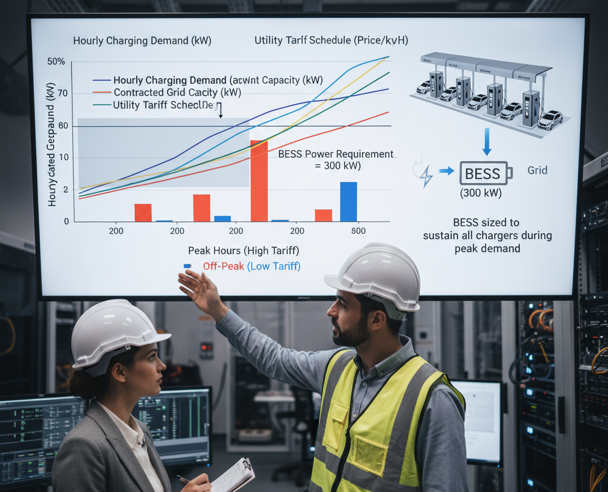
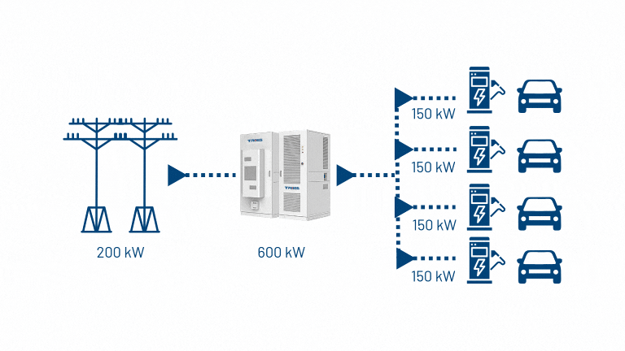
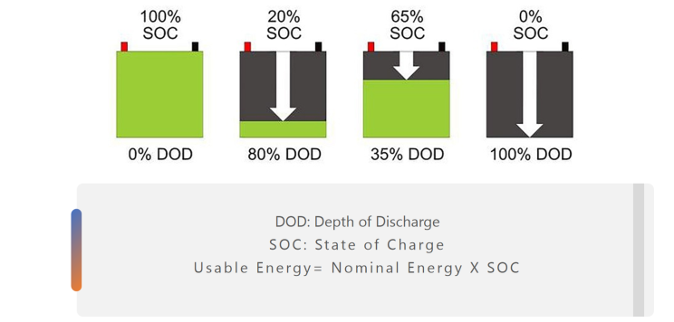
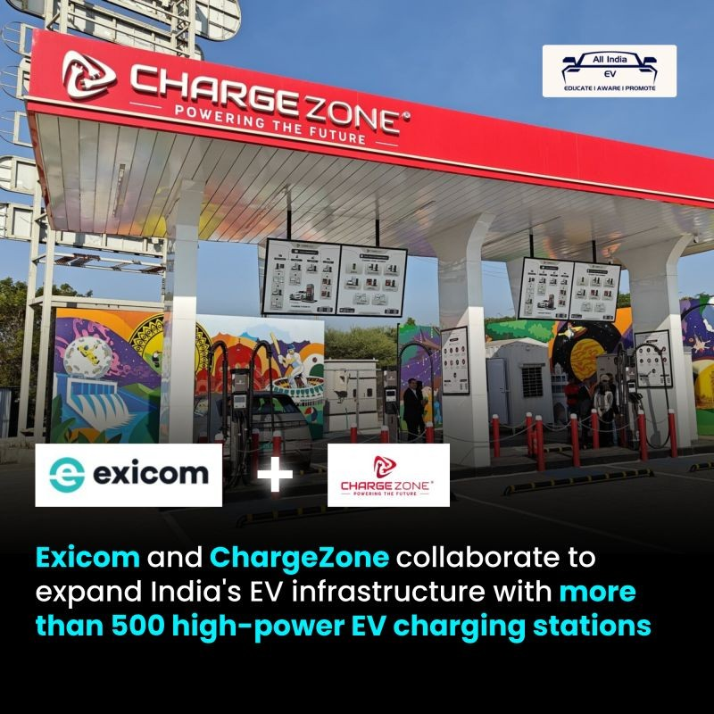
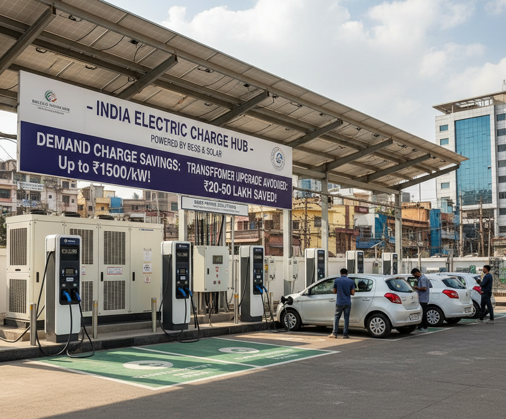
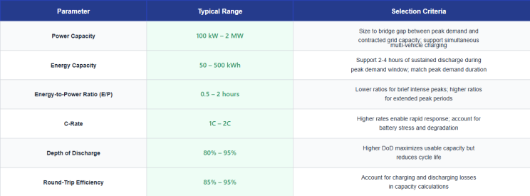

Battery Energy Storage Systems (BESS) have become instrumental in addressing the operational and economic challenges of electric vehicle (EV) fast charging stations. Multi-port charging stations, which can serve multiple vehicles simultaneously with high power outputs ranging from hundreds of kilowatts to several megawatts, face significant financial and technical hurdles—particularly related to demand charges and grid infrastructure limitations. Proper BESS sizing is critical to maximize return on investment, reduce operating costs, and ensure reliable charging service delivery.
Understanding the Business Case for BESS in Fast Charging
Multi-port fast charging stations draw substantial power from the grid in concentrated bursts, creating two primary cost challenges: peak demand charges and grid infrastructure constraints. Utility demand charges—typically measured in $/kW per billing period—represent approximately 85% of operating costs for many fast-charging stations, even exceeding the cost of energy consumption itself. This financial structure makes these stations uneconomical in high-tariff regions without strategic intervention.

BESS addresses this by operating as a peak shaving solution: it stores energy during off-peak periods when both electricity prices and charging demand are low, then discharges during peak hours to supplement grid supply. This strategy significantly reduces the peak demand registered with the utility, effectively "shaving" the demand profile and dramatically lowering monthly bills. Beyond cost reduction, BESS enables operators to expand charging capacity without costly grid infrastructure upgrades— Delft University of Technology research demonstrates that BESS can reduce required grid connection sizes by up to 80% in some scenarios.
Key Dimensions of BESS Sizing
Effective BESS sizing requires balancing two independent yet equally important parameters: power capacity and energy capacity.
Power Capacity (MW/kW) defines the maximum instantaneous discharge rate—how quickly the system can release electricity. For fast charging applications, power capacity must be sufficient to supplement grid supply during simultaneous multi-vehicle charging events without exceeding the site's grid interconnection capacity.
Energy Capacity (MWh/kWh) indicates the total amount of stored energy available before recharging is necessary. This parameter determines how long the BESS can maintain its power output. For a charging station with significant charging events throughout the day, energy capacity must account for multiple discharge cycles.

The Energy-to-Power Ratio (E/P) expresses the relationship between these parameters. For example, a 2 MW/4 MWh system has an E/P ratio of 2 hours, meaning it can deliver its full 2 MW power output for 2 hours continuously before depletion. A 1 MW/4 MWh system with the same energy capacity can deliver 1 MW for 4 hours. This ratio directly influences both system cost and operational suitability.
C-Rates and Supply Duration
The C-rate characterizes how quickly a BESS charges or discharges relative to its capacity. A 1C rate means the battery fully charges or discharges in one hour. For a 100 kWh BESS at 1C, the system delivers 100 kW of power for exactly one hour.
For fast charging applications demanding rapid energy delivery with short discharge cycles, BESS typically operates at high C-rates (1C to 2C or higher), meaning faster charging and discharge cycles but with shorter sustained output duration. Lower C-rates (0.5C, 0.25C) are suited for longer discharge periods with lower instantaneous power requirements.

Supply duration is calculated simply: Duration (hours) = Energy Capacity (MWh) ÷ Rated Power (MW). A practical example: with a 2 MW power rating and 3 MWh energy capacity, the system achieves a 1.5-hour supply duration, meaning the BESS can discharge at full 2 MW for 1.5 hours before complete depletion.
Sizing Methodology: A Practical Framework
Effective BESS sizing for multi-port fast charging stations follows a structured, multi-step approach:
Step 1: Analyze Historical Load Profiles
The foundation of proper sizing is understanding the actual charging patterns at your specific location. Collect hourly load data over a representative period (ideally 12+ months) capturing seasonal variations. For each hour, record: total energy consumed, simultaneous number of vehicles charging, and peak instantaneous power draw. This data reveals patterns such as morning peaking (for fleet depots), evening peaking (for retail destinations), or continuous mid-range loading (for highway rest stops).

Step 2: Define Grid Connection and Demand Charge Constraints
Determine the maximum power your utility contract permits without incurring additional demand charges (the contractual "demand cap"). Many utility tariffs impose demand charges based on the highest 15-minute peak consumption during the billing cycle. BESS sizing should target reducing this peak to acceptable levels, typically 30-50% below unconstrained demand.
Step 3: Calculate Optimal BESS Power Capacity
The required power capacity equals the difference between peak charging demand and the site's contracted grid capacity. For a station with 500 kW peak demand and 200 kW contracted grid capacity, BESS power should be minimally 300 kW to bridge this gap during simultaneous multi-vehicle charging.
However, optimization requires overlay analysis. Map hourly charging demand against grid capacity and utility tariff schedules. The BESS should discharge during high-tariff peak hours and charge during low-tariff off-peak hours. The power capacity must be sized to sustain all chargers during peak demand periods without exceeding grid limits.

Step 4: Calculate Energy Capacity Requirements
Energy capacity depends on discharge duration needs. Analyze how long the site experiences peak demand each day. If your charging station's peak demand period lasts 4-6 hours daily, energy capacity should support 4-6 hours of full-power discharge.
Using the Delft optimization framework: for a four-port fast charging station with 26.58 kW per port (constant charging rate) operating with sparse, unpredictable charging patterns, optimal sizing was determined to be approximately 46.5 kW power / 28.3 kWh energy, yielding an E/P ratio of approximately 0.6 hours. This relatively low ratio reflects fast charging's nature—short, intense discharge cycles rather than sustained multi-hour output.

However, a more practical formula for sizing considers that BESS should supply supplemental power during the peak 2–3-hour window when most simultaneous charging occurs, suggesting: Energy Capacity (MWh) = Peak Power Deficit (MW) × Peak Duration (hours). For a 300-kW deficit sustained for 3 hours, energy capacity should be minimally 900 kWh.
Step 5: Account for Depth of Discharge and Usable Energy
BESS specifications typically report installed capacity, but manufacturers recommend limiting discharge to a Depth of Discharge (DoD) percentage—usually 80-95% for lithium-ion systems—to protect battery longevity. Usable energy is calculated as: Usable Energy = Installed Capacity × DoD. A 100 kWh BESS with 80% DoD provides only 80 kWh of usable energy, so system sizing must account for this to ensure adequate available capacity.

Step 6: Incorporate Round-Trip Efficiency Losses
Real-world BESS experiences charging and discharging losses. Lithium-ion systems (LFP, NMC) typically achieve 85-95% round-trip efficiency, meaning a system charged with 100 kWh delivers approximately 85-95 kWh of usable output. Sizing calculations should deerate energy capacity by the inverse of efficiency: Effective Capacity = Rated Capacity ÷ Efficiency. For a 100-kWh system with 90% efficiency, account for only 90 kWh usable output.
Multi-Objective Optimization Approach
Given the complex interdependencies between power capacity, energy capacity, grid constraints, cost, and performance, research institutions employ genetic algorithms and mixed-integer linear programming to determine globally optimal sizing across multiple competing objectives. These optimization frameworks simultaneously minimize:
- Demand charges (via peak shaving effectiveness)
- BESS capital costs (favor smaller systems)
- Charging delays or service degradation (favor larger power capacity)
- Battery degradation costs (account for cycling stress)
The result is a Pareto frontier of sizing options, each offering different tradeoffs between upfront cost and operational benefits. Operators can select their preferred position along this frontier based on acceptable payback period and risk tolerance.
Real-World Case Studies and Outcomes
A comprehensive case study of a four-port DC fast charging station in Los Angeles revealed that optimal BESS sizing achieved a Return on Investment (ROI) of approximately $22,400 over 10 years, with payback in approximately 5-7 years. The optimal configuration was 46.5 kW/28.3 kWh BESS, generating annual cost savings of approximately $2,200-$3,000 through demand charge reduction alone.
In Ontario, Canada, a smaller gas station implementing a 100 kWh BESS charged by a 10-kW solar PV array achieved annual savings of $23,966 with a 4-year payback period, demonstrating that smaller-scale deployments can achieve attractive economics. The system cost approximately $95,000, offsetting costs through reduced peak hour electricity rates.

India-specific initiatives underscore market momentum. Exicom partnership with ChargeZone targets deployment of over 500 high-power EV charging stations integrated with renewable energy and BESS solutions across India's growing EV corridor network. These integrated systems leverage Exicom's Harmony Boost BESS solution to optimize energy consumption, reduce peak grid loads, and enable greener charging operations.

Practical Considerations for Indian Operators
For BESS deployment at multi-port fast charging stations in India, several contextual factors merit specific attention:
- Tariff Structure and Demand Charges: Indian utility tariffs vary significantly by state and distribution company. Many impose monthly demand charges of ₹500-1,500 per kW, making demand reduction highly economical. Time-of-Use (TOU) pricing, where peak-hour rates are 2-3x off-peak rates, further enhances BESS value through energy arbitrage.
- Grid Capacity Constraints: India's distribution infrastructure remains capacity-constrained in many corridors. Transformer and feeder capacities often limit fast charging deployment without expensive upgrades. BESS enables stations to operate within existing grid capacity, avoiding Rs. 20-50 lakh transformer upgrade costs.
- Renewable Integration: India's target of 500 GW renewable capacity by 2030 creates opportunities for co-locating solar PV with BESS-enabled charging stations, further reducing grid dependence and operational costs.
- Government Support: India's FAME II scheme provides subsidies for charging infrastructure deployment and may eventually extend to BESS support, improving ROI profiles.

Critical Design Parameters Summary

Financial Viability Assessment
BESS economics depend critically on site-specific factors. High-ROI scenarios typically feature:
- High utility demand charges (>₹1,000/kW monthly in India)
- Favorable TOU pricing spreads (>3x ratio between peak and off-peak rates)
- High charging utilization rates (>2,000 charging events monthly)
- Attractive BESS capital costs (<₹50-70 lakh per MWh installed)
- Access to multiple revenue streams (demand charge reduction + grid services + renewable integration)
Conversely, sites with low demand charges, flat tariffs, and sparse utilization face challenging ROI horizons and may not justify BESS investment.
Conclusion
Sizing BESS for multi-port fast charging stations is a rigorous engineering and financial exercise requiring integration of load analysis, utility tariff optimization, equipment specifications, and lifecycle cost modeling. The optimal sizing emerges from balancing power and energy capacities to minimize demand charges while maintaining reliable service delivery.
As demonstrated through global case studies and emerging India-specific deployments, well-sized BESS systems deliver compelling returns through cost savings and operational resilience, while enabling operators to expand charging capacity without grid infrastructure upgrades. The convergence of falling BESS costs, rising electricity tariffs, and supportive government policies makes BESS-enabled multi-port charging stations an increasingly strategic investment for Indian operators targeting sustainable, profitable EV infrastructure deployment.